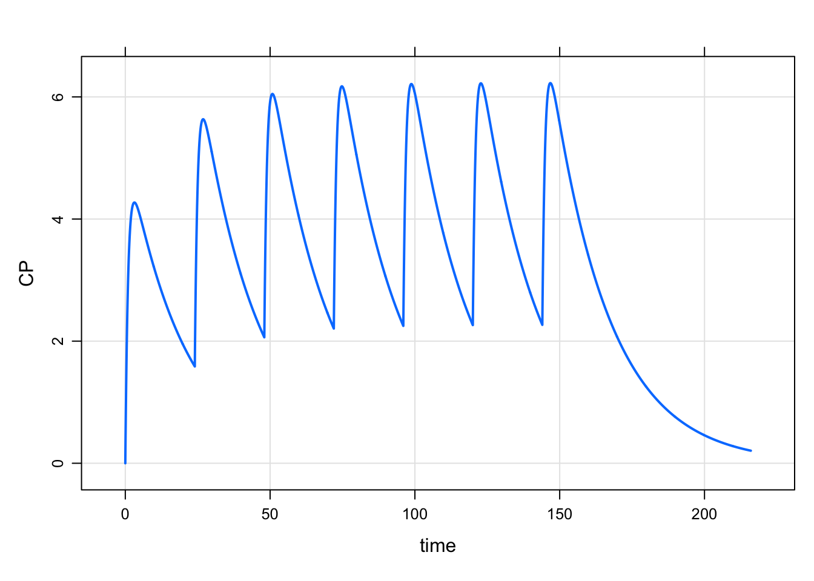
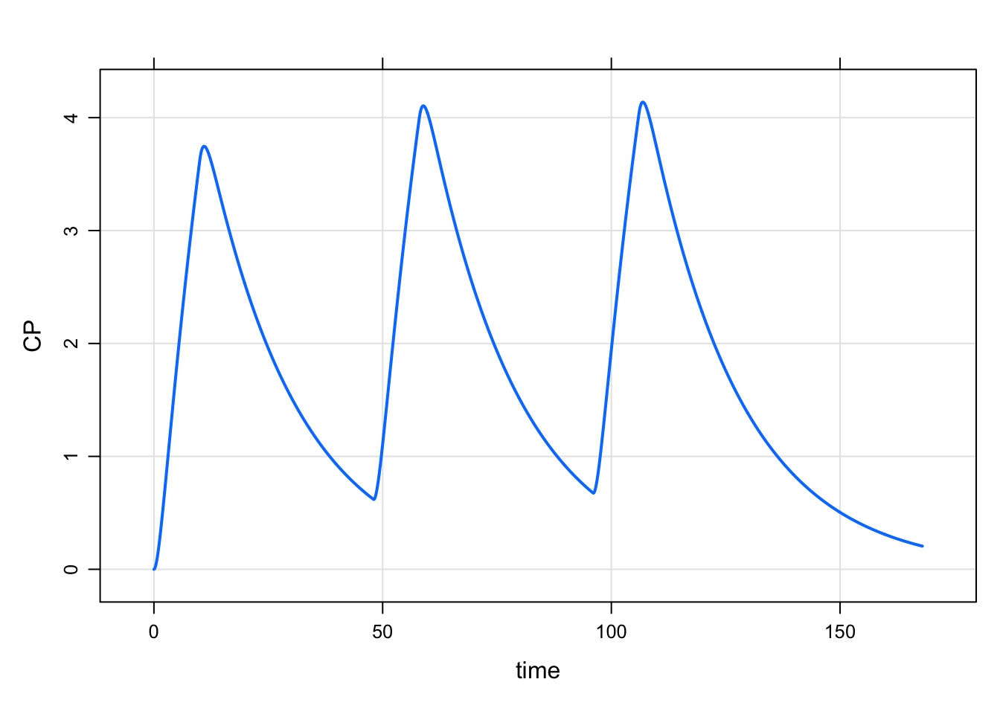
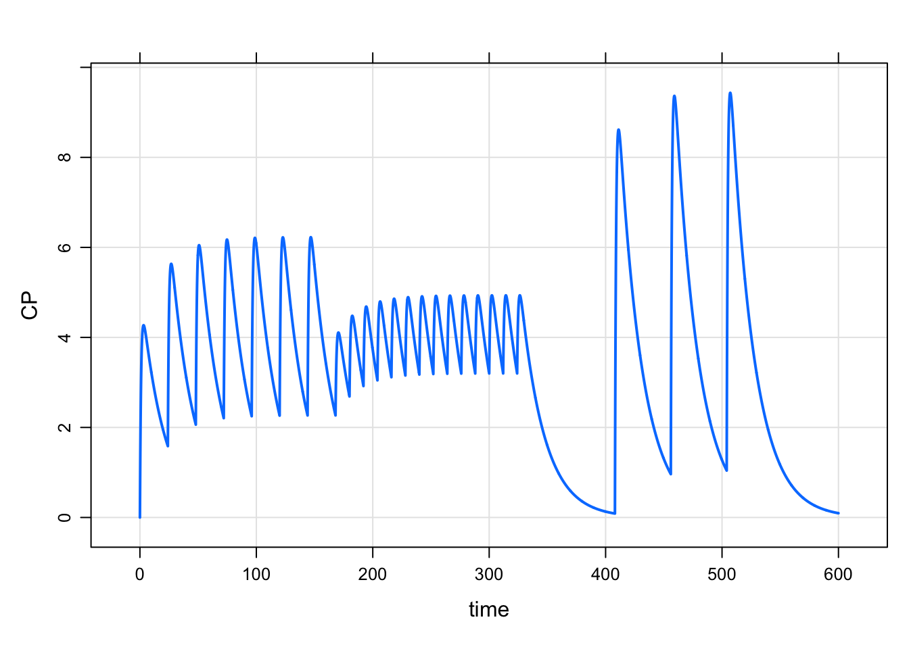

Alternate dosing event syntax
I got into pharmacometrics after studying and working as a pharmacist, both in a community pharmacy (interning while I was a pharmacy student) and in an inpatient (hospital) pharmacy (practicing as a pharmacist while studying pharmacometrics and clinical pharmacology). So I always thought it would be cool to have mrgsolve take in dosing informationlike you would see on a Rx or written in a chart
sig: 100 mg po daily x 7This post introduces something new in mrgsolve 0.9.0 that works along those lines.
1 Review
First, a review: we have these things called
For example, say we want a dose every day for one week. Assuming that our model is in hours, we could write
. Events:
. time cmt amt evid ii addl
. 1 0 1 100 1 24 6
And if I wanted to follow that by a week at every 48 hours, first create the q48h event object
. Events:
. time cmt amt evid ii addl
. 1 0 1 100 1 48 3and then combine them together in a sequence
. Events:
. time cmt amt evid ii addl
. 1 0 1 100 1 24 6
. 2 168 1 100 1 48 3
And then if we wanted to repeat 3 cycles of that
2 New in 0.9.0
New in 0.9.0 is a grammar of specifying some of this dose event information. I’ve been wanting to do something like this for a while, but never quite had the right implementation. The current try isn’t perfect, but I thought it was worth it to give a try and see if we can improve.
2.1 Bolus doses
. Events:
. time cmt amt evid ii addl
. 1 0 1 100 1 24 6
. 2 168 1 100 1 48 3The syntax is:
- Start with
amt - Dosing interval follows
q - Total number of doses follows
x - A second part of the sequence follows
then
2.2 Infusion
To do an infusion, the duration of the infusion comes after over
. Events:
. time cmt amt evid ii addl rate
. 1 0 1 100 1 48 2 10
Hrm … but we wanted the infusion to be IV, not in the depot compartment. To do that, put the compartment number after in
. Events:
. time cmt amt evid ii addl rate
. 1 0 2 100 1 48 2 102.3 Another sequence
Rather than then you can separate by comma. Also, see if you can tell what after does here:
. Events:
. time cmt amt evid ii addl
. 1 0 1 100 1 24 6
. 2 168 1 50 1 12 13
. 3 408 1 200 1 48 2It still takes a fair amount of text to get all of this out, but hopefully the notation is relatively compact and expressive.

3 Important note
I don’t see this ever replacing the regular event object construction. Maybe it is force of habit for me, but I still regularly just use the constructor. That might be easier in the end. For now, this alternate syntax is sort of proof of concept to see how it might work. Definitely you can’t do everything you might want to do with this syntax. In that case, just revert to the usual constructors.
mrgsolve: mrgsolve.github.io | metrum research group: metrumrg.com